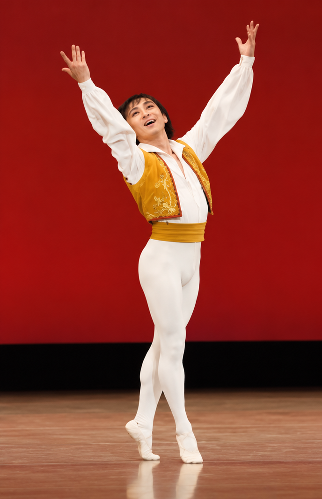

No.1 · 比較著作権法 · 2026年10月21日
パブリックドメインは本当に自由なのか
― ヴィクトル・ユーゴーの構想と有償パブリックドメイン制度の比較法的考察 ―
著作権が消滅した著作物の利用に、なぜ金銭的負担が課されるのか。各国制度と文化振興政策を考えます。
全文を読む →法律学と舞踊学の交差領域を探究する
独立研究者・修士（法学）・舞踊家
著作権法、民法、舞踊学、身体表現論を中心に、振付と実演、身体表現の構造、舞踊の著作物の保護について研究しています。

ヴィクトル・ユーゴーの構想と、アフリカ・南米諸国における有償パブリックドメイン制度を比較法的に検討する研究ノートを公開しました。
研究ノートを読む →東洋大学法学部法律学科卒業。中央大学大学院法学研究科国際企業関係法専攻博士前期課程修了（2005年）。修士（法学）。埼玉工業大学非常勤講師として民法を担当した経験を持つ。
1988年から1998年まで松山バレエ団に所属し、退団後はフリーのバレエダンサーとして舞台活動を続ける。現在はY’s湘南バレエアーツを主宰し、バレエの指導に携わる。また、法律学と舞踊学を横断する研究に取り組んでいる。
振付の創作的表現、既存のステップの選択・配列、振付と実演の関係を検討する。
声などの人格的利益の保護と、民法上の不法行為責任を検討する。
「『踊ってみた』にみる舞踊の著作権に関する一考察」、クラシック・バレエの身体表現の構造、声の無断利用に対する民法上の保護など。
※ 上記は執筆・検討中の研究課題であり、刊行済み業績ではありません。
比較法・著作権法・舞踊に関する調査と考察を、ウェブ公開研究ノートとして掲載します。査読付き論文とは区別しています。
― ヴィクトル・ユーゴーの構想と有償パブリックドメイン制度の比較法的考察 ―
著作権が消滅した著作物の利用に、なぜ金銭的負担が課されるのか。各国制度と文化振興政策を考えます。
全文を読む →舞台で使われる不思議な言葉や作品の背景を、バレエ経験者の視点からひもとく一般向けコラムです。
白鳥たちの登場場面が、なぜ「ステテコ」と呼ばれるのか。戦後の衣装事情と語源の謎をたどります。
記事を読む →松山バレエ団（1988–1998年）に所属。以後、フリーの舞踊家として活動。現在はY’s湘南バレエアーツ主宰。バレエの実演・指導経験を基盤に、身体表現の構造を研究に結びつけている。
埼玉工業大学非常勤講師（2010–2012年、民法総則・物権法）。バレエ指導（2016年～）。
研究業績・研究者情報は以下の外部プロフィールでも公開しています。
researchmapは登録完了後に追加予定です。